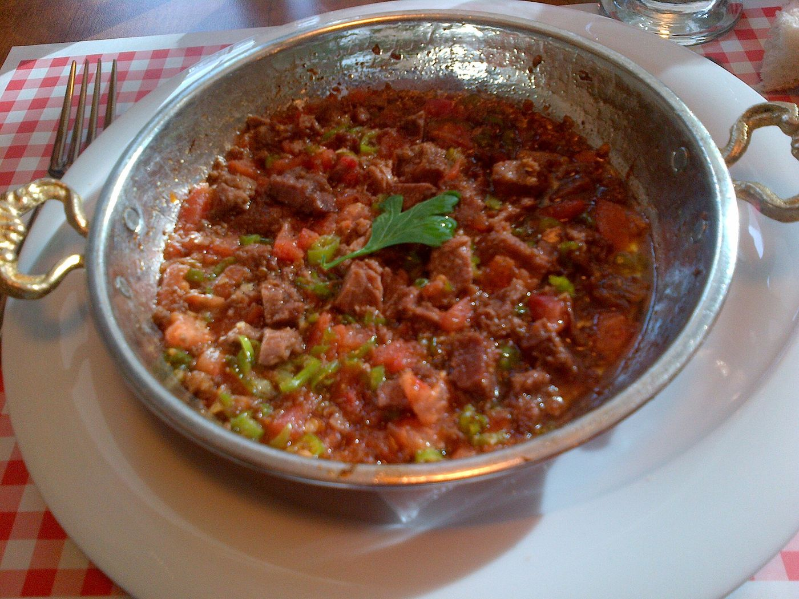
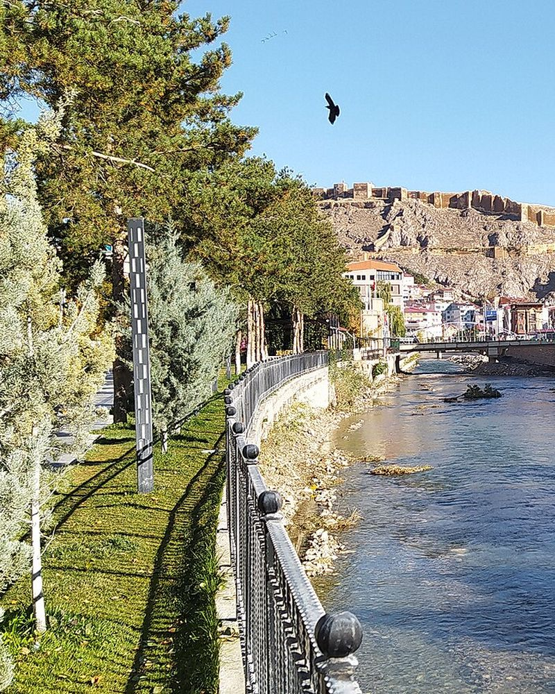
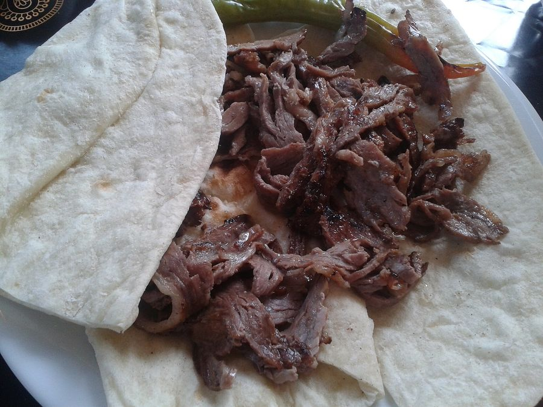
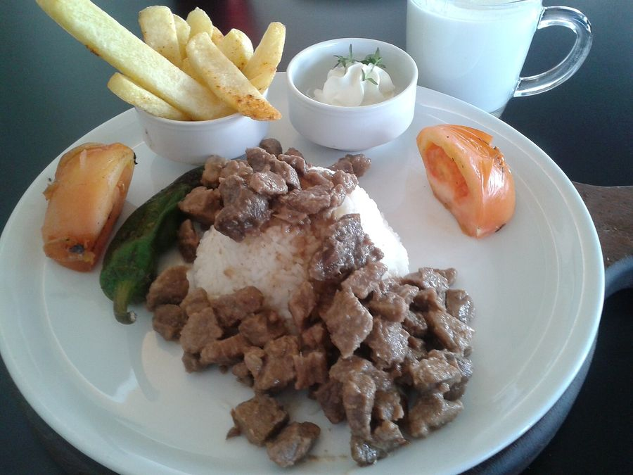

İmza lezzet
Sahanda Kavurma
Kendi yağında, ağır ateşte kavrulmuş dana eti. Bakır sahanda, cızırdarken masanıza gelir.
Bayburt Merkez · Cumhuriyet Caddesi
Bakır sahanda kavurma, ustalıkla kesilen döner, tereyağlı pilav ve her sabah yeniden kaynayan çorbalar. Esnafın, yolcunun ve ailelerin buluştuğu lokanta.

Hikâyemiz
Çoruh, Bayburt’un ortasından geçer; şehrin hayatı da onun kıyısında akar. Lokantamız tam orada, Cumhuriyet Caddesi’nde, nehrin kenarında. Sabahın ilk çorbasından akşamın son pilavına kadar kapımız açık, ocağımız sıcak.
Biz işimizi sade tutarız: iyi et, temiz yağ, doğru pişirme. Kavurmamızı bakır sahanda, pilavımızı tereyağıyla, sulu yemeklerimizi her gün taze hazırlarız. Masaya gelen tabak, evde pişse nasıl olacaksa öyle olsun isteriz.
Çorbalar ve sulu yemekler sabah ocağa girer, gün içinde tazelenir.
Kavurma ve dönerimiz için eti kendimiz seçer, kendimiz hazırlarız.
Esnaf da gelse, aile de gelse, yolcu da gelse aynı ilgiyle karşılarız.
Ustanın tavsiyesi
Misafirlerimizin en çok sorduğu, en çok tekrar istediği tabaklar.

Kendi yağında, ağır ateşte kavrulmuş dana eti. Bakır sahanda, cızırdarken masanıza gelir.

Her gün taze hazırlanan, ince ince kesilen döner. Porsiyon, pilav üstü ya da dürüm.

Tane tane tereyağlı pirinç pilavı; üstüne kavurma ya da döner. Lokantanın en sevilen ikilisi.

Mercimek, ezogelin, işkembe ve Bayburt usulü kesme çorbası. Limon ve taze ekmekle.
Misafirlerimiz ne diyor?
“Kavurma muhteşem, pilav çok güzel.”
“Hizmet süper, çalışanlar çok ilgili, misafirperver.”
“Çok güzel döner, çorbalar lezizdi.”
“Yemeklerden çok memnunuz.”
Bizi ziyaret edin